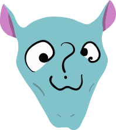
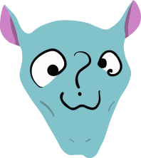

Projects
Explore fascinating and technically challenging projects.
This page is currently empty. I encourage you to visit the games page and check back soon.
 

Explore fascinating and technically challenging projects.
This page is currently empty. I encourage you to visit the games page and check back soon.